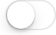

Controls
액티비티 인디케이터
액티비티 인디케이터는 테스크나 프로세스가 진행중이라는 것을 보여준다. (아래의 텍스트 레이블과 함께 있는 것)
액티비티 인디케이터는 :
테스크가 진행 중일 때 회전하며 테스크 완료시 사라진다.
사용자 인터렉션을 허용하지 않는다.
액티비티 인디케이터는 툴바 또는 메인 뷰에서 처리가 일어나고 있다는 것을, 언제 종료될지에 대한 제안 없이 보여준다.
멈춰있는 액티비티 인디케이터를 디스플레이 하지 마라. 사용자들은 정지한 액티비티 인디케이터를 멈춰버린 프로세스와 연관지어 생각한다.
액티비티 인디케이터를 그들의 테스크나 프로세스가 멈추지 않았다고 안심시키기 위해 사용하라. 가끔은 언제 처리가 끝날지를 알려주는 것보다 그냥 사용자를 안심시키는 게 더 중요하다.
액티비티 인디케이터를 커스터마이즈해서 들어가는 뷰와 어울리게 하라. 가능하다면, 액티비티 인디케이터의 크기와 컬러를 들어가는 뷰와 맞춰라.
연락처 추가 버튼
연락처 추가 버튼은 사용자에게 존재하는 연락처를 텍스트 필드 또는 다른 텍스트 기반의 뷰에 더하도록 한다.
연락처 추가 버튼은 :
사용자의 연락처 리스트를 디스플레이 한다
연락처 추가 버튼을 포함하고 있는 뷰에 연락처를 더하도록 돕는다.
키보드를 사용하지 않고 연락처에 접근하는 손 쉬운 방법을 사용자에게 제공하기 위해 연락처 추가 버튼을 사용한다. 예를 들어, Mail 작성 뷰에서 To 필드에 수신자의 이름을 타이핑하는 대신에 연락처 추가 버튼을 탭 하면 된다.
연락처 추가 버튼은 연락처 정보를 타이핑하는 것에 대한 대안이므로, 키보드 입력을 받지 않는 뷰에는 적당하지 않다.
날짜 피커
날짜 피커는 연, 일, 시, 분 과 같은, 날짜와 시간의 컴포넌트를 디스플레이 한다.
날짜 피커는 :
최대 네개의 독립된 휠을 디스플레이하며, 각각은 월 또는 시 같은 단일 범주의 값을 디스플레이 한다.
현재 값을 어두운 텍스트로 뷰의 중간에 표시한다.
사이즈 조정 불가 (날짜 피커의 크기는 아이폰 키보드 크기와 동일)
네가지 모드를 가지고 있으며, 각각은 다른 값의 세트를 포함하는 휠을 디스플레이 한다.
날짜와 시간. (디폴트 모드) 칼렌더 날짜, 시간, 분 값을 가지며 AM/PM 지정을 위한 부가적인 휠도 있다.
시간. 시간 모드는 시, 분값을 위한 휠을 디스플레이 하며, AM/PM 지정을 위한 부가적인 휠도 있다.
날짜. 월, 일, 그리고 년 값을 디스플레이하는 휠을 가진다.
카운트다운 타이머. 시와 분을 위한 휠을 가진다. 최대 23시간 59분까지 카운트 다운의 총 기간을 설정할 수 있다.
날짜 피커, 년, 월,일의 다중 파트로 구성된, 를 이용해서 사용자가 - 타이프 하지 않고- 날짜 또는 시 값을 선택할 수 있도록 한다.
가능한 한, 날짜 피커를 콘텐트와 한 줄에 배치하라. 날짜 피커를 사용하기 위해 사용자가 다른 뷰로 네비게이션하는 것을 피하는 것이 좋다. 아이패드에서, 날짜 피커는 팝오버로 또는 인라인으로 나타날 수도 있고 한 줄로 나타날 수도 있다.
앱에서 의미적으로 문제가 없다면, 분 휠의 간격을 변경하라. 기본적으로, 분 휠은 60개의 값(0~59)을 디스플레이 한다. 보다 성근 선택을 디스플레이할 필요가 있다면, 휠을 60으로 떨어지는 보다 큰 분 간격으로 설정할 수 있다. 예를 들어, ¼ 시간 간격으로 0.15.30.45를 디스플레이 할 수 있다.
디테일 디스클로저 버튼
디테일 디스클로저 버튼은 아이템에 연관된 부가적인 상세함 또는 기능을 드러낸다.

디테일 티스클로저 버튼은 특정 아이템에 연관된 부가적인 정보나 기능을 가지는 별도의 뷰를 드러낸다.
디테일 티스클로저 버튼이 테이블 뷰 로우에 나타나면, 로우의 다른 영역을 탭하는 것은 디테일 티스클로저 버튼을 동작시키지 못한다; 그 대신, 그것은 로우 아이템을 선택하거나 앱이 정의한 동작을 할 것이다.
전형적으로, 디테일 티스클로저 버튼을 테이블 뷰에 사용해서 리스트 아이템에 대한 보다 자세한 정보나 기능을 보는 법을 제공한다. 그러나, 이 요소를 다른 타입의 뷰에서도 사용해서 그 뷰 안의 아이템에 연관된 정보나 기능을 보여주는 데 사용하라.
정보 버튼
정보 버튼은 앱에 대한 상세한 설정 정보를 드러내며, 가끔은 현재의 뷰 뒤에 있다.
iOS는 두 종류의 정보 버튼 스타일을 가지고 있다. 어두운 색상의 버튼은 밝은 콘텐트 위에서 보기에 좋고, 밝은 색상의 버튼은 어두운 콘텐트 위에서 보기에 좋다.
정보 버튼을 이용해서 상세 설정 또는 앱에 대한 부가설정을 드러낸다. 정보 버튼의 스타일을 당신 앱의 UI와 가장 잘 어울리는 것으로 사용할 수 있다.
레이블
레이블은 스태틱한 문자를 디스플레이 한다.
레이블은 :
스태틱 텍스트를 얼마든지 디스플레이 할 수 있다.
사용자 인터렉션 수신은 하지 않지만, 텍스트 복사를 위해서는 가능하다.
레이블을 이용해 당신 UI의 일부를 설명하거나 이름붙이고, 사용자에게 짧은 메세지를 제공한다. 레이블은 상대적으로 적은 양의 텍스트를 디스플레이 하기에 최적으로 맞춰져 있다.
레이블을 읽을 수 있도록 주의를 기울여라. 레이블에 디스플레이 할 텍스트를 얻기 위해 다이나믹 타입을 지원하고 UIFont의 preferredFontForTextStyle 메소드를 사용하는 것은 좋은 생각이다. 커스텀 서체를 사용하기로 마음 먹었다면, 예쁜 레터링이나 화사한 컬러를 위해 명료함을 희생시키지 마라. (“Color and Typography”페이지 51을 보라. 다이나믹 타입에 대한 정보는 Text Programming Guide for iOS 문서의 “Text Styles”를 보라.)
네트워크 액티비티 인디케이터
네트워크 액티비티 인디케이터는 스테이터스 바에 나타나서 네트워크 활동이 일어나고 있음을 보여준다.
네트워크 액티비티 인디케이터는 :
네트워크 활동이 진행중일 때 스테이터스 바에서 회전하며 네트워크 활동이 멈주면 사라진다.
사용자 인터렉션을 허용하지 않는다.
앱이 몇 초 이상 네트워크에 접근할 때는 네트워크 액티비티 인디케이터를 디스플레이해서 피드백을 제공하라. 그보다 빨리 동작이 끝난다면, 사용자가 그것을 인지하기도 전에 사라지게 될 것이므로 네트워크 액티비티 인디케이터를 보여줄 필요가 없다.
페이지 컨트롤
페이지 컨트롤은 얼마나 많은 뷰가 열려있는지와 현재 어떤 것이 보이고 있는지를 지시한다. (Weather 앱에서 보이는 것이 아래에 있다)
페이지 컨트롤은 :
앱에서 현재 열려있는 개별 뷰마다 점 하나를 디스플레이 한다. (왼쪽에서 오른쪽으로, 점은 뷰가 열려있는 순서를 나타낸다.)
기본적으로, 불투명한 점을 사용해 현재 보이는 뷰를 나타내고 반투명한 점으로 다른 모든 뷰들을 나타낸다.
비순차적으로 뷰를 보는 방식을 지원하지 않는다.
많은 뷰가 열려있다고 해서 압축되거나 찌그러지지 않는다; 뷰의 크기보다 더 많은 점을 디스플레이 하려고 하면, 점들은 잘릴 것이다.
Doesn’t enable navigation between views by default; you must implement view-to-view navigation and update the page control’s state appropriately
앱의 각각의 뷰가 다른 모든 뷰들과 동류일 때 페이지 컨트롤을 이용하라.
앱의 정보를 뷰의 계층을 이용해 표시하는 경우 페이지 컨트롤을 사용하지 마라. 페이지 컨트롤은 사용자들이 특정 경로를 통해 되돌아 가는 것을 돕지 않으므로, 계층적인 네비게이션을 가능하게 하지 않는다.
Avoid displaying too many dots. More than about 10 dots are hard for users to count at a glance and more than about 20 open views are time consuming to visit in sequence. If users can open more than about 20 peer views in your app, consider displaying the views in a different arrangement that provides more information about the views and enables nonsequential navigation.
페이지 컨트롤을 화면의 아래 모서리와 열린 뷰의 아래 모서리 사이에 세로 방향으로 중앙정렬 한다. 이 위치에 있으면, 페이지 컨트롤은 사용자를 가로막지 않으면서 항상 보인다. 현재 화면 방향에 대해 너무 많은 점들을 표시하지 마라. 예를 들어, 세로방향의 아이폰 화면은 20개에 달하는 점을 가질 수 있다.
피커
피커는 사용자가 하나를 선택할 수 있는 값의 세트를 디스플레이 한다.
피커는 :
날짜 피커의 일반형 버전 (날짜 피커에 대한 정보가 필요하다면,날짜 피커를 보라)
하나 이상의 휠을 가지고 있으며, 각각은 값의 리스트를 가진다.
뷰의 중간에 현재 값을 어두운 글자로 디스플레이 한다.
크기 조정되지 않는다. (피커의 크기는 아이폰 키보드의 크기와 동일하다)
피커를 이용해 사람들이 값의 세트에서 선택하는 것을 쉽게 한다.
일반적으로, 사용자가 세트 값에 전체적으로 익숙한 경우 피커를 사용한다. 휠이 정지해 있을 때는 많은 값들이 숨겨져 있으므로, 사용자가 그 숨겨진 값들이 어떤 값인지 예상할 수 있으면 좋다. 사용자에게 익숙하지 않은 방대한 세트의 선택지를 제공해야 하는 경우에는, 피커가 적당한 컨트롤이 아닐 수 있다.
가능한, 피커를 콘텐트와 한 줄에 디스플레이 하라. 사용자가 피커를 사용하기 위해 다른 뷰로 네비게이션하지 않도록 하는 게 좋다.
아주 많은 양의 값을 디스플레이 해야 하는 경우, 피커 대신 테이블 뷰 사용을 고려하라. 테이블 뷰의 더 큰 높이가 스크롤을 보다 빠르게 해 주기 때문이다.
프로그레스 뷰
프로그레스 뷰는 알려진 기간을 가지는 테스크나 프로세스의 진행단계를 보여준다.(아래는 Mails 툴바에서 보인 것)
프로그레스 뷰는 :
테스크나 프로세스가 진행되는 것을 왼쪽에서 오른쪽으로 채우는 트랙으로 구성되어 있다.
사용자 인터렉션을 허용하지 않는다.
iOS는 두가지 스타일의 프로그레스 뷰를 정의한다.
디폴트. 디폴트 스타일은 앱의 메인 콘텐트 영역에 적합한 무게를 가진다.
바. 바 스타일은 디폴트 스타일보다 얇아서, 툴바에 적당하게 맞춰져 있다.
프로그레스 뷰는 잘-정의된 기간을 가지는 테스크에 대해 피드백을 제공하기 위해, 특히 테스크가 얼마나 걸릴지를 대략 알리는 것이 중요할 때 사용한다.
가능하다면, 프로그레스 뷰의 모양을 당신 앱의 스타일과 맞춰라. 프로그레스 뷰를 커스터마이즈 해서, 트랙과 필을 커스텀 틴트 또는 이미지로 지정할 수 있다.
리프레시 컨트롤
리프레시 컨트롤은 -주로 테이블 뷰에서-사용자가 시작하는 콘텐트 리프레시를 수행한다. (아래 메일박스 리스트 위에 보이는 것)
리프레시 컨트롤은 :
액티비티 인디케이터와 비슷하게 보인다.
타이틀을 디스플레이 할 수 있다.
사용자가 테이블의 위쪽에서 끌어당겨서 리프레시 액션을 시작하기 전까지는 기본적으로 숨겨져 있다.
리프레시 컨트롤을, 사용자들에게 테이블이나 다른 뷰들이 그 콘텐트를 즉시 업데이트 하라고 말하는 일관된 방식을 제공하기 위해 사용하라.
리프레시 컨트롤을 제공했다고 해서 자동 콘텐트 업데이트 기능을 멈추지 마라. 사용자들이 ‘당장' 업데이트를 수행하는 기능을 좋아하겠지만, 콘텐트가 자동으로 리프레시 되는 것 역시 좋아할 것이다. 모든 리프레시를 사용자에게 기대면, 리프레시 컨트롤을 알지 못하는 사용자들은 왜 당신의 앱은 정지한 데이터를 디스플레이하는지 궁금해 할 것이다. 일반적으로, 사용자들에게 즉시 콘텐트를 리프레시 하는 옵션을 주고 싶을 것이다; 모든 업데이트에 대한 책임을 사용자에게 넘기지 않을 것이다.
가치가 있다면 짧은 타이틀을 제공하라. 특히, 타이틀을 이용해 리프레시 컨트롤을 이용하는 방법을 설명하는 데 사용하지 말라.
라운디드 렉 버튼
라운디드 렉 버튼은 iOS 7에서 디프리케이트 되었다, 대신 시스템 버튼 - UIButtonTypeSystem타입의 UIButton을 사용하라. 가이드라인은 System Button을 보라.
세그먼티드 컨트롤
세그먼티드 컨트롤 다른 뷰를 디스플레이 할 수 있는 기능을 가지는 버튼 역할을 하는 세그먼트들의 직선적인 세트이다.
세그먼티드 컨트롤은 :
세그먼트의 총 갯수에 기반해서 너비가 균등한, 두 개 이상의 세그먼트로 구성.
텍스트나 이미지를 디스플레이 할 수 있다.
세그먼티드 컨트롤을 이용해 매우 연관성이 있지만 상호 배타적인 것에 대한 선택사항을 제안하기 위해 사용하라..
각각의 세그먼트들이 탭 하기 쉬워야 한다. 각각의 세그먼트에 대해 44 X 44 포인트의 편안한 힛트 영역을 유지기 위해서, 세그먼트의 갯수를 제한하라. 아이폰에서, 세그먼티드 컨트롤은 다섯개 이하의 세그먼트를 가져야 한다.
가능한한, 각 세그먼트의 콘텐트 사이즈를 일관되게 하라. 세그먼티드 컨트롤의 모든 세그먼트들은 동일한 너비를 가진다. 콘텐트가 어떤 세그먼트는 꽉 채우고 다른 것은 그렇지 않다면 좋아보이지 않는다.
하나의 세그먼티드 콘트롤에 텍스트와 이미지를 섞어 넣지 마라. 세그먼티드 컨트롤은 텍스트나 이미지를 가질 수 있다. 개별 세그먼트는 텍스트 또는 이미지를 가질 수 있지만 둘 다 가져서는 안된다. 일반적으로, 하나의 세그먼티드 컨트롤에서 어떤 세그먼트에는 텍스트를 넣고, 다른 세그먼트에는 이미지를 넣는 것을 삼가라.
필요하다면, 커스터마이즈한 세그먼티드 컨트롤에서 콘텐트의 위치를 조정하라. 만약 세그먼티드 컨트롤의 배경을 커스터마이즈 했다면, 컨트롤의 콘텐트는 자동으로 중앙정렬하는 것이 여전히 보기에 좋다. 바 메트릭스 API를 이용해 세그먼티드 컨트롤 내부의 콘텐트 위치잡기를 하라. UISegmentedControl에 설명되어 있는 모양-커스터마이즈 API를 보라).
슬라이더
슬라이더 슬라이더는 허가된 값 범위안에서 사용자가 특정한 값으로 조정을 하거나 처리할 수 있도록 한다. (아래 그림은 좌우에 커스텀 이미지가 있는 것 )
슬라이더는 :
수평 트랙과 썸(사용자가 컨트롤할 수 있는 원형 컨트롤)으로 구성.
좌우에 의미를 전달할 수 있는 부가적인 이미지를 포함할 수 있음.
최소값과 썸 사이의 트랙 영역을 채움
슬라이더를 사용자가 선택 가능한 범위 내에서 값을 미세하게 조정하거나 현재 프로세스의 동작을 선택할 수 있도록 한다.
가치가 있다면, 슬라이더의 커스텀 모양을 만들어라. 예를 들어, :
썸의 모양을 정의해서, 사용자들이 그 슬라이더가 동작중인지 한 눈에 흘낏 볼 수 있도록 한다.
슬라이더의 양쪽 끝에 이미지를 제공해서 그 슬라이더가 뭘 하는 건지 이해할 수 있도록 한다.
전형적으로, 커스텀 이미지들은 슬라이더가 컨트롤하는 값 범위의 최소와 최대값에 해당한다. 예를 들어, 이미지 크기를 제어하는 슬라이더의 경우, 최소쪽 끝에 아주 작은 이미지를, 아주 큰 이미지를 최대쪽 끝에 디스플레이 한다.
어떤 쪽의 썸인지와 어떤 상태의 컨트롤이 있는지에 따라, 트랙에 대해 다른 모양을 정의하라.
슬라이더를 이용해 볼륨 컨트롤을 디스플레이 하지 말라. 음량 슬라이더를 디스플레이 해야 할 필요가 있다면, MPVolumeView 클래스를 이용하면 사용가능한, 시스템이 제공하는 볼륨 슬라이더를 사용하라. 현재 액티브한 오디오 아웃풋 디바이스가 볼륨 컨트롤을 지원하지 않는다면, 볼륨 슬라이더는 적당한 장치 이름으로 대체될 것이다.
스테퍼
스테퍼는 일정량 만큼 값을 늘리거나 줄인다.
스테퍼는 :
두 세그먼트를 가지는 컨트롤이다. 하나의 세그먼트는 더하기 심볼을, 다른 세그먼트는 빼기 심볼을 기본적으로 표시하고 있다.
커스텀 이미지를 지원한다.
사용자가 바꾸는 값을 디스플레이 하지는 않는다.
사용자가 조그만 값 조정을 해야 하는 경우, 스테퍼를 사용하라.
사용자가 값에 큰 변경을 할 것 같으면 스테퍼 사용을 하지 마라. 스테퍼를 사용해 프린터 옵션 액션 시트에서 사본의 수를 설정하는 것은 의미가 통한다 왜냐하면, 사용자가 이 값을 크게 바꾸는 경우는 거의 없기 때문이다. 그 반면에, 페이지 범위 선택에 스테퍼를 사용하는 것은 의미적으로 맞지 않다.왜냐하면 합리적인 페이지 범위인 경우에도 많은 탭을 필요로 하기 때문이다.
스테퍼가 영향을 미치는 값을 명백하게 지정하라. 스테퍼는 값을 표시하지 않기 때문에, 사용자가 스테퍼를 사용해 어떤 값을 변경시키는지를 확실하게 할 필요가 있다.
스위치
스위치는 두 개의 상호 배타적인 선택 또는 상태를 나타낸다.
On
Off
스위치는 :
아이템의 이진 상태를 나타낸다.
테이블 뷰에서만 사용된다.
테이블 로우에서 스위치를 이용해 사용자들에게, 아이템의 상태를 관리하는 yes/no 또는 on/off 같은 두 선택지 중 하나를 지정할 수 있는 방법을 제공한다.
테이블 로우에서 스위치를 이용해 사용자들에게, 아이템의 상태를 관리하는 yes/no 또는 on/off 같은 두 선택지 중 하나를 지정할 수 있는 방법을 제공한다. 사용자가 만드는 선택에 따라, 새로운 리스트 아이템이 나타나거나 사라지고, 리스트 아이템이 액티브/인액티브가 된다.
시스템 버튼
시스템 버튼은 앱-지정 액션을 수행한다.
시스템 버튼은 :
기본적으로 백그라운드나 경계선을 가지고 있지 않다.
아이콘이나 텍스트 타이틀을 가질 수 있다.
경계선이나 백그라운드 이미지 같은 커스텀 장식을 지원한다. ( 커스텀 모양을 더하려면,
UIButtonTypeCustom타입의 버튼을 이용하고 커스텀 백그라운드 이미지를 제공하라 )
액션을 시작하기 위해 시스템 버튼을 사용하라. 시스템 버튼의 제목을 제공할 때, 다음을 따르라 :
동사나 동사구를 이용해 그 버튼이 수행하는 액션을 묘사하라. 액션-지정 제목은 버튼이 인터렉티브하묘 그것을 탭 했을 때 어떤 일이 일어날지에 대해 설명한다.
제목 스타일의 대문자를 사용하라. 관사(articles), 등위 접속사, 네 글자 이하의 전치사를 제외한 모든 단어를 대문자화하라.
타이틀을 너무 길게 만들지 마라. 지나치게 긴 텍스트는 잘리기 때문에, 사용자들이 이해하기가 어렵다.
가능하다면, 콘텐트 영역에 있는 시스템 버튼에는 외곽선이나 백그라운드를 더하라. 대부분의 시간동안, 명백한 행동개시(call-to-action) 타이틀을 다듬고, 틴트를 정의하고, 컨텍스추얼 단서들을 제공함으로서 버튼에 장식을 더하는 것을 지양할 수 있었다. 그러나, 어떤 콘텐트 영역에서는 버튼에 초점을 맞추기 위해 외곽선이나 백그라운드가 있는 외형을 만드는 게 적당할 수 있다.
대부분의 시간동안, 명백한 행동개시(call-to-action) 타이틀을 다듬고, 틴트를 정의하고, 컨텍스추얼 단서들을 제공함으로서 버튼에 장식을 더하는 것을 지양할 수 있었다. 그러나, 어떤 콘텐트 영역에서는 버튼에 초점을 맞추기 위해 외곽선이나 백그라운드가 있는 외형을 만드는 게 적당할 수 있다.
텍스트 필드
텍스트 필드는 한 줄의 사용자 입력을 받아들인다 (아래에는 목적을 설명한 플레이스 홀더 텍스트가 있는 것)
텍스트 필드는 :
고정 높이를 가지며 모서리가 둥글다
사용자가 탭하면 자동적으로 키보드를 디스플레이 한다
북 마크 버튼 같은 시스템 제공 버튼을 포함할 수 있다
다중 스타일을 이용하는 텍스트를 디스플레이 할 수 있다 (
UITextView를 보라)
텍스트 필드는 사용자에게 적은 량의 정보를 얻을 때 이용하라.
사용자들이 그것을 사용하는 법을 이해하는 데 도움이 된다면 텍스트 필드를 커스터마이즈 하라. 예를 들어, 텍스트 필드의 왼쪽 또는 오른쪽에 커스텀 이미지를 디스플레이 하거나 북마크 버튼 같은 시스템 제공 버튼을 더할 수 있다. 일반적으로, 텍스트 필드의 왼쪽 끝에 그 목적을 나타내고, 오른쪽 끝에 북 마크 같은 부가적인 기능의 존재를 나타낸다.
적당하다면 텍스트 필드의 오른쪽 끝에 Clear 버튼을 디스플레이 하라. 이 요소가 있다면, 이걸 탭하면, 그 위에 어떤 이미지를 디스플레이 하든 상관없이, 텍스트 필드의 콘텐트를 지운다.
그 목적을 이해하는 데 도움이 된다면, 텍스트 필드에 힌트를 디스플레이 하라. 텍스트 필드는 다른 텍스트가 필드에 없을 때, Name 또는 Address 같은 플레이스홀더를 디스플레이 할 수 있다.
사용자들이 입력할 것으로 예상되는 콘텐트의 타입에 따라 맞추기 위해 다른 키보드 타입을 지정하라. 예를 들어, 사용자들이 URL, PIN, 전화번호를 쉽게 입력하도록 만들고 싶을 수 있다. 그러나 Note는 사용자의 언어 설정에 따라 결정될 뿐, 입력 메소드와 레이아웃을 제어하지 않는다.
iOS는 몇 종류의 키보드 타입을 가지고 있는데, 각각은 서로 다른 입력을 위해 디자인 되어 있다. 사용가능한 키보드 타입에 대해 공부하고 싶으면, UIKeyboardType 문서를 보라. 앱에서 키보드를 관리하는 법을 배우려면 iOS App Programming Guide의 “Managing the Keyboard”를 읽으라.
Copyright © 2014 Apple Inc. All rights reserved. Terms of Use | Privacy Policy | Updated: 2014-03-10